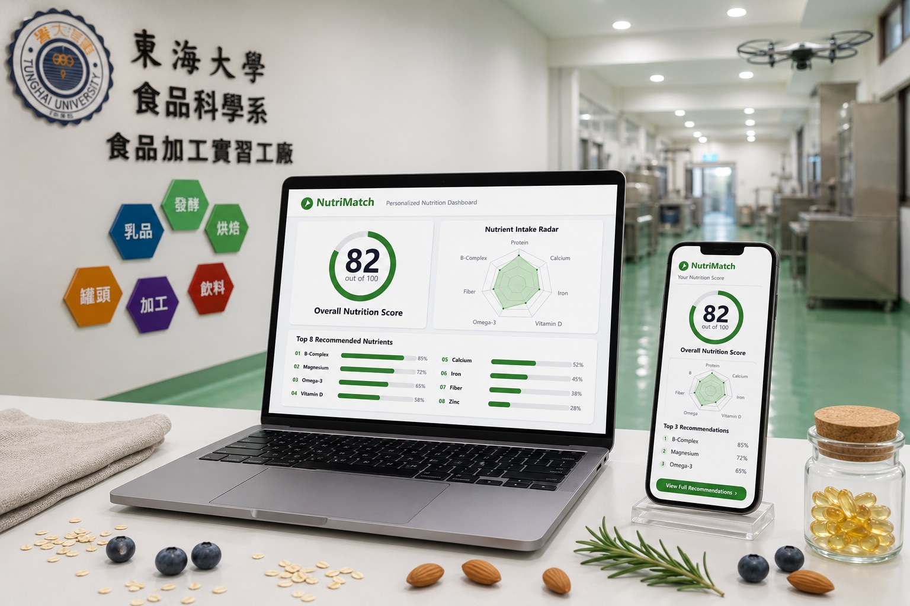
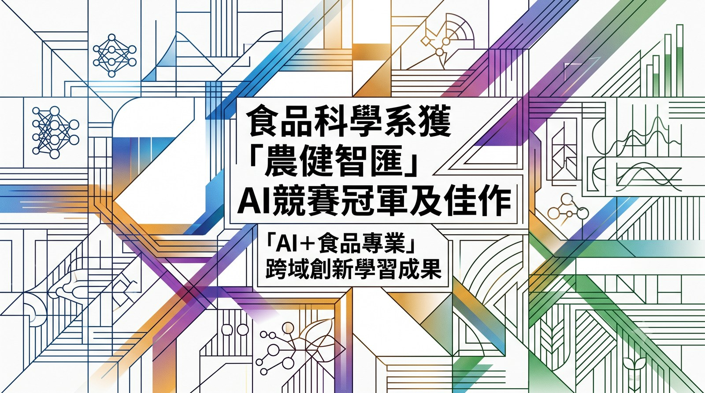

Champion / 冠軍
01
「農健智匯」AI 課程競賽
冠軍暨佳作雙料獎項
東海大學農業暨健康學院日前主辦「農健智匯」AI 課程成果發表競賽，聚焦於 AI 應用結合學院課程、跨域整合與創新、口頭簡報與海報，以及團隊合作等評選重點。食品科學系師生團隊憑藉扎實的食品專業知識，結合資料科學、生成式 AI 及數位媒體工具的學習成果，從涵蓋農業、食品、健康、運動、餐旅與永續等多面向的激烈競爭中脫穎而出，勇奪冠軍與佳作雙料獎項。
食科系近年持續將食品資料科學、智慧科技、精準營養與生成式 AI 融入課程及實作。此次得獎作品共同指出一項重要原則：AI 工具必須建立在可查證資料、食品科學知識與人工審核之上，未來將持續透過課程、專題與跨系合作，培育兼具食品科學專業與數位創新素養的人才。
Featured ProjectNutriMatch · 精準營養儀表板

NUTRIMATCH DEMO · Autoplay on scroll
View report
跟著
東海食科